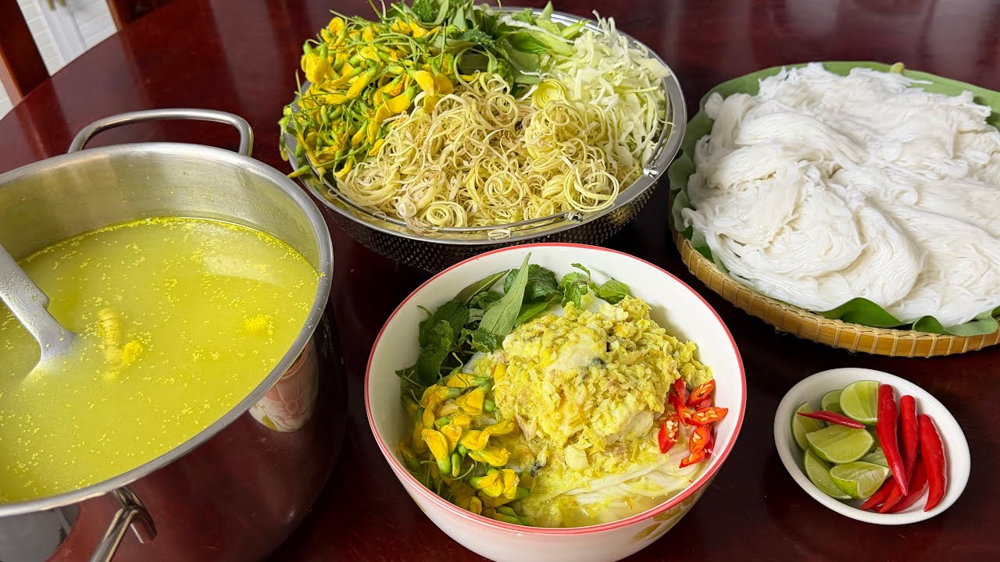

Our story
Good food should be easy to make
Craving Recipes is a collection of simple, home-cooked dishes, from the Khmer classics we grew up with to favorites from around the world.

How it started
It began in a family kitchen. Many of our favorite dishes were never written down. They lived in a parent's or grandparent's hands, measured by eye and taste.
We started writing them down so they would not be lost, then added the dishes we loved from other countries. Every recipe is cooked at home first, with ingredients you can find at a local market.
What we care about
Simple steps
Clear instructions that work for beginners and busy cooks.
Real flavor
Traditional dishes made the way they are meant to taste.
Food for everyone
Recipes from many countries, for every meal and every budget.
How we write a recipe
- We cook the dish at home, more than once.
- We write down the real amounts and timings.
- We keep the ingredient list short and easy to find.
- We share it with clear steps from start to finish.
Say hello
Have a question, or a family recipe you would like to share? We would love to hear from you.
hello@cravingrecipes.com